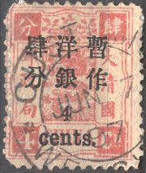

(Reduced size)
Return To Catalogue - Forgeries of the 1894 issue - China 1878-1893 - China 1897-1908
Note: on my website many of the
pictures can not be seen! They are of course present in the
catalogue;
contact me if you want to purchase it.
(Reduced size)


1 c orange 2 c green 3 c yellow 4 c red 5 c orange 6 c brown 9 c green 12 c yellow 24 c red Surcharged (1897)





1/2 c on 3 c yellow 1 c on 1 c orange 2 c on 2 c green 4 c on 4 c red 5 c on 5 c orange 8 c on 6 c brown 10 c on 6 c brown 10 c on 9 c green 10 c on 12 c orange 30 c on 24 c red
For the specialist: two different overprints exist, one with small numerals and one with large numerals. All these stamps are perforated 12. These stamps have watermark 'Shell'.


Watermark 'Shell' on a 24 c stamp
Value of the stamps |
|||
vc = very common c = common * = not so common ** = uncommon |
*** = very uncommon R = rare RR = very rare RRR = extremely rare |
||
| Value | Unused | Used | Remarks |
| 1 c | *** | *** | |
| 2 c | *** | *** | |
| 3 c | *** | *** | |
| 4 c | *** | *** | |
| 5 c | *** | *** | |
| 6 c | *** | *** | |
| 9 c | *** | *** | |
| 12 c | *** | *** | |
| 24 c | *** | *** | |
| Surcharged (two types of overprint) | |||
| 1 c on 1 c | ** | ** | |
| 2 c on 2 c | ** | ** | Also exists on a stamp with slightly different design: '2' changed. |
| 4 c on 4 c | *** | *** | |
| 5 c on 5 c | ** | ** | |
| 8 c on 6 c | *** | *** | |
| 10 c on 6 c | *** | *** | |
| 10 c on 9 c | R | *** | |
| 10 c on 12 c | R | R | |
| 30 c on 24 c | R | R | |
For Forgeries of the 1894 issue, click here, (by the way, I'm not 100 % sure if all the above stamps are genuine).
(Reduced sizes)
'one cent.' on 3 c red '2 cents.' (in one line) on 3 c red '2 cents.' (in two lines) on 3 c red '4 cents.' on 3 c red '1 dollar.' on 3 c red '5 dollars.' on 3 c red
Value of the stamps |
|||
vc = very common c = common * = not so common ** = uncommon |
*** = very uncommon R = rare RR = very rare RRR = extremely rare |
||
| Value | Unused | Used | Remarks |
| 1 c on 3 c | ** | ** | |
| 2 c on 3 c | *** | ** | '2 cents' in one line |
| 2 c on 3 c | ** | ** | '2 cents' in two lines |
| 4 c on 3 c | *** | *** | |
| 1 $ on 3 c | RR | RR | |
| 5 $ on 3 c | RRR | RRR | |
Some modern 'Hialeah' forgeries of these stamps, generated with a scanner and printer (offered in large quantities on Ebay):
(Hialeah forgeries)
(Even double overprints and a 2 c with 't' missing in 'cents'
were forged by the Hialeah forger)
For stamps of China issued from 1898 onwards click here.


{kind=link}
{kind=link}
{kind=link}